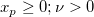

/math-9ca61f458c78bb5591d04aaaa14da0e7.png "\chi^2") cdf for the corresponding probabilities in
cdf for the corresponding probabilities in /math-02129bb861061d1a052c592e2dc6b383.png "X") with parameters specified by
with parameters specified by /math-4fdefba26320686bb2bd0579a0df421c.png "\nu") .
. computes the inverse of the cdf for the corresponding probabilities in with parameters specified by .
The deviate,/math-f5e81d79b535c85746763245f006f7b5.png "x_p") , associated with the lower tail probability
, associated with the lower tail probability /math-83878c91171338902e0fe0fb97a8c47a.png "p") of the distribution with degrees of freedom is defined as the solution to
of the distribution with degrees of freedom is defined as the solution to
/math-a5acc3c3f591db7e52ab0b6622aafcda.png "P(X\leq x_p)=p=\frac 1{2^{\nu /2}\Gamma (\nu /2)}\int_0^{x_p}X^{\nu /2-1}e^{X/2}dX")
where

(input, double), from the required distribution. , of the distribution, ..